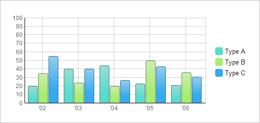
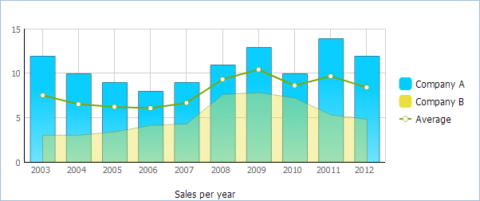
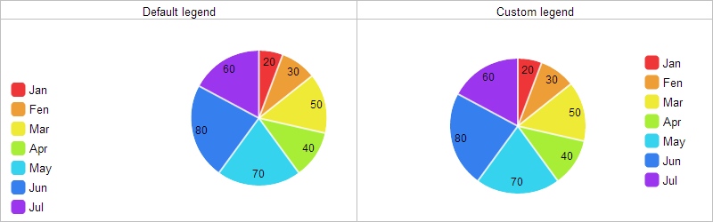

Legend
Legends are used to provide information about the charts shown on the page and tell you what each bar or line etc. represents.
Starting from version 4.0, legends get interactivity: each click on a legend item removes/adds the related data series (the first click - removes, the second - adds, the third - removes and so on).

Here is a small example which demonstrates how to create and configure the legend:
var barChart = new dhtmlXChart({ view:"bar", container:"chartBox", value:"#sales1#", color: "#58dccd", xAxis:{ template:"'#year#"}, legend:{ values:[{text:"Type A",color:"#58dccd"},{text:"Type B",color:"#a7ee70"},{text:"Type C",color:"#36abee"}], valign:"middle", width:90, layout:"y" } }); barChart.addSeries({ value:"#sales2#", color:"#a7ee70" }); barChart.addSeries({ value:"#sales3#", color:"#36abee" }); barChart.parse(mydataset,"json");
First of all, the legend is specified through the legend parameter.
- values defines legend items (text - the item text label, color - the item color, markerType - the marker type, toggle - enables/disables the possibility to hide/show a specific graph by clicking on the graph legend item )
- valign sets the vertical alignment of the legend
- width sets the width of the legend block
- layout defines whether items should be placed vertically or horizontally
The full list of the legend parameters you can find in chapter 'Legend parameter: attributes'.
Setting different markers for different graphs

To set different markers for graphs you should:
- Specify legend items manually, through values parameter (don't use template);
- Use markerType property to assign the desired marker type to a graph.
legend:{ layout:"y", align:"right", valign:"middle", width:100, values:[ {text:"Company A",color:"#00ccff"}, //uses the default marker {text:"Company B",color:"#e9df40"}, //uses the default marker {text:"Average",color:"#b25151", markerType: "item"} //uses the specified marker ] }
Automatic generation of legend items in pie charts
In pie charts along with usual legend definition (shown above) you may use the predefined definition and create the legend in one line - just specifying the template for items labels (all other job dhtmlxChart will do for you by itself).
Let's compare:
//custom definition var myChart = new dhtmlXChart({ view: "chart", type:"pie", ... legend:{ width:75, align:"right", valign:"middle", template:"#month#" } }); |
//default definition var myChart = new dhtmlXChart({ view: "chart", type:"pie", ... legend:"#month#" }); |
